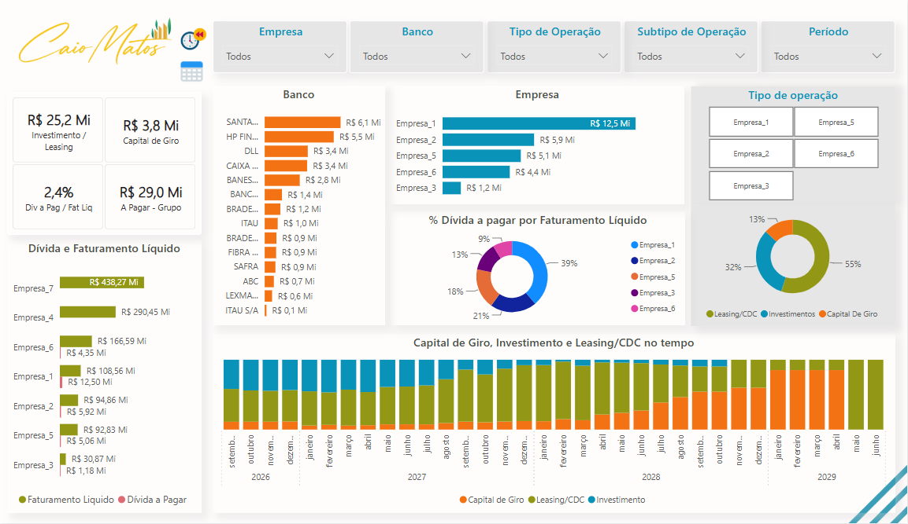

POWER BI • FINANÇAS
Análise Financeira Corporativa.
Dashboard desenvolvido para consolidar e analisar operações financeiras, endividamento, faturamento, capital de giro, investimentos e relacionamento com instituições financeiras.

CONTEXTO
O projeto
O projeto foi desenvolvido para centralizar informações financeiras relevantes em uma única visão analítica, permitindo acompanhar diferentes empresas, bancos, operações e períodos.
O dashboard possibilita analisar a composição do endividamento, acompanhar operações financeiras e comparar os valores envolvidos entre empresas e instituições financeiras.
DESAFIO
O problema
Informações financeiras distribuídas entre diferentes empresas, instituições e tipos de operação tornam a análise consolidada mais complexa.
O objetivo foi transformar essas informações em uma visão executiva capaz de facilitar comparações, identificar concentrações e acompanhar a evolução financeira ao longo do tempo.
ANÁLISE
Principais indicadores
Endividamento
Análise das dívidas e sua relação com o faturamento líquido.
Operações financeiras
Acompanhamento de capital de giro, investimentos e leasing.
Instituições financeiras
Distribuição dos valores e operações entre os diferentes bancos.
Evolução temporal
Acompanhamento da composição das operações financeiras ao longo do tempo.
POWER BI
Explore o dashboard
Utilize filtros e interaja diretamente com o relatório.
STACK